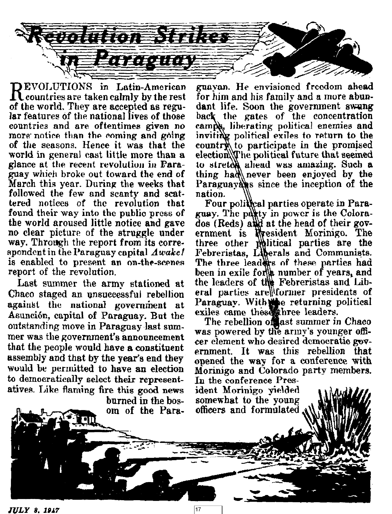

JULY 8, 1947
SEMIMONTHLY
THE MISSION OF THIS JOURNAL
News sources that are able to keep you awake to the vital issues of our times must be unfettered by censorship and selfish Interests. "Awake I” has no fetters. It recognizes facts, faces facte, is free to publish facte. It is not bound by political ambitions or obligations; it is unhampered by advertisers whose toes must not be trodden on; it is unprejudiced by traditional creeds. This journal keeps itself free that it may speak freely to you. But it does not abuse its freedom. It maintains integrity to. truth.
* Awake I” uses the regular news channels, but is not dependent on them. Ite own correspondents are on all continents, in scores of nations. From th© four corners of the earth their uncensored, on-the-scenes reports come io you -through these columns. This journal’s viewpoint is not narrow, but is international. It is read in many nations, in many languages, by persons of all ages. Through its pages many fields of knowledge pass in review—government, commerce, religion, history, geography, science, social conditions, natural wonders—-why, its coverage is as broad as the earth and as high as th© heavens.
“Awake!” pledges itself to righteous principles, to exposing hidden foes and subtle dangers, to championing freedom for all, to comforting mourners and strengthening those disheartened by the failures of a delinquent world, rElecting sure hope for the establishment of a righteous New World.
Get acquainted with "AwakeI” Keep awake by reading “Awake!”
Published Semimonthly By WATCHTOWER BIBLE AND TRACT SOCIETY, INC.
117 Adame Street Brooklyn 1, N. Y., U. S, A.
N. H. Kwoeb, President Grant Suites, Secretary
Five cents a copy One dollar a year
Remittances eta-ciuld tie sent to efito1 in ymjit country in ctunplitUHS with regulations to guarantee safe d&liTery of money. BemittanMs are accepted at Brooklyn from countries where no office is located, by intemitlcmal money cider only. Subscription rates In different ounMes ate iiira stated in local currency.
Netlee of expiration (with renewal blank) is sent at least twv isua brfun siibKripUoD expires.
Chttflt of Bddnu when sent to our efltee may be expected effective within one month, fiend your uld as well m new address.
Offices Yearly Subscription Bale
Amorita, U<!L 117 Adams St., Brooklyn 1. N.Y. $1 Aeltrxlli, 7 Beresford Rd.. Strathfleld. N S.W. ds Canada, 40 Irwin Are., Toronto 5. Ontario £1 Englanf, 34 Craven Terrace, London, W. 2 5s South Africa, £23 Boston House, Cape To^n 6a
Entered as Bceond-cliM matter at Breohlyn, N. Y,. Art of March 3, 1879. Trlntsd in U. 8. A
CONTENTS
Poland Suffers in Papal Snails
Revolution Strikes in Paraguay
Open Revolution
The Innocent Victims
Clergy-inspired
Denmark, Past and Present
A Peep at History
Religion
Nazi Occupation of Denmark
“Thy Word Is Truth”
The Power Behind Bible Authenticity Can American Fascism Be Stopped? Arctic Icecap Disappearing
Watching the World
^“Now it is high time to awake.Romans 13:11 QJ
Velums XXVIII ’ Brooklyn* N.Y,, ju[y a, 1M7 Number 19
“Either Poland shall be Catholic, or she shall not be 1”—Cardinal Hlond.
POLAND does not find peace and tranquillity, One fact is clear: Poland lies now at the border-line of two spheres of influence—between East and West—and officially chose the offensive and defensive alliance with the East
By this choice, however, the ultramontane party in the country sees itself greatly threatened and therefore seeks for ways and means not to lose a grip on the position of power and priority with all its attending privileges attained during hundreds of years of struggle and violent effort. 'Therefore the question is raised here more than anywhere else on earth: “Who shall rule?”
Here too the reason is intimated why the security of the country suffers so acutely, why guerrilla bands threaten the property and lives of citizens and human blood is constantly flowing; why Roman Catholic priests declare that “power lies upon the street and it is sufficient to stretch out one's hand and grasp it”, and announce that a “revolution is brewing and therefore il is necessary to be on the lookout for weapons”; why Roman Catholic churches are being used as arsenals whose clergy pronounce in secret sentences of death against citizens free of Rome while their church servants carry them out; and why the authorities sentence to death and execute Catholic priests as leaders of lawless bands. By battling against symptoms the government endeavors without avail to he master of the situation, and postpones the fighting of causes for a more opportune tune. But as in this way the safety of the country is endangered over a longer period and its peaceful reconstruction remains in abeyance, the government now endeavors by way of compromise with the Vatican to create a "modus vivendi”.
In this way it can be said that the situation in Poland is not dissimilar to that of Spain before the outbreak of revolution. Just the two Catholic dictators (Mussolini and Hitler) outside the country are wanting, who might be willing to hold the stirrups for a Catholic tyrant within the country that he might swing into the totalitarian saddle,
Among papal supporters there is a fundamental unification because they simultaneously seek to ohtain a common goal by two different routes. The goal is well known: All political and religious enemies of Rome must be exterminated, and Rome-free citizens brought under subjection. The Jesuit maxim, “Willst du nicht Wiern Bruder sein, schlag ich dir den Schadel ein [Will you not be my brother, then I'll bash your head in]," which fonnd its completion in Nazidom, is the driving force of the belligerent Roman Catholic Church to which all her priests are obligated. Obligated, inasmuch as today every Catholic Bishop in 3 swearing the oath of office (the/'fora juramenti”) must still promise the pope to “persecute and eradicate the heretics, schismatics and all others who stand up against our Lord and his successor (i.e., the pope), inasfar as this lies within his power”. According to Pope Leo X, it is "Hoi contrary to the holy spirit to bum heretics” (Bull "Exurge DOmine”).
Even in the year 1870 Bishop Hef ele acknowledged that the Boman Catholic Hierarchy would still have no objection to seeing the flames of the stake piles blaze up anew for heretics in the nineteenth century. The idea is always the same. In the year 1895 Pius Langennius, a high dignitary of the Vatican, lauded the inquisitors and extolled the flames of he stake in the following words as pub-ished in the Catholic journal Analecta Ecclesiastical "O blessed flames of the stake! Through you, by exterminating but a few thoroughly corrupted people, thousands upon thousands of souls have been saved from the abyss of error and eternal damnation.” This is still the keynote in Poland today, and it was according to this controlling principle, for instance, that all inhabitants were murdered and their houses set on fire in the village of Wierzchowiny in the Lublin Wojewod district; that the pogrom of the Jews was carried out in Kielce, and .many other infamous acts committed.
When in the ultramontane camp we can speak of two separate ways, then only for the reason that, inasmuch as the advocates of the first way strive toward an immediate subjection of the whole nation and a complete destruction of all disobedient without consideration, in which are included the political aud religious enemies of Rome, the advocacies of the second way pursue the course of typical Jesuit diplomacy, and work at a long range. The latter see now with great anxiety a new political Rome-free state arising rind consolidating itself without their collaboration and so they postpone the final round for a mote opportune time. Declaring hypocritically that they acknowledge the status quo, they co-operate in order to grasp the steering wheel of the ship of state, , As public spokesman of this party in liberated Poland, the Roman Catholic priest, Ks, Henryk Weryiiski, takes the floor and he appeals to ths Catholic wing in the country not to let themselves be cut out by the left parties in the execution of the social reforms. As opportune ist he favors a positive attitude of Catholics to the “new rhythm of life”, to the "social reforms” and to the "government of the people” in harmony with the- principle of adaptation that Catholicism is compatible with a republic and with democracy, In this connection he points to the specific type of the radical and progressively minded Catholics of France, who frankly and freely support the official left parties in order to achieve a maximum social program. He advocates in this way a new mode of thinking and an understanding for the necessity of # complete revolution of ideas.
Summarized then, this second party seeks (now that the "power of holy Hitler” has proved wholly*abortive) to devour this Rome-free state only at a more convenient time. First the "religious opponents” shall be throttled. Hence, for the time being peace must be made with the political power at present at the helm.
When now in Poland Rome lifts her eyes to take her aim against her "religious oppressors”, then she feees with wonder a small but particularly courageous group of men and women standing dauntlessly face to face with her. The organ of the Polish Jesuits Poslaniec Serca Jezusowego writes in its jubilee issue of January, 1947, the following; "Concerning the mobility and extent of the propaganda activity of the sects existing in the world today, then none of these can be compared with the Bible Students (Jehovah's witnesses). Hence one has the impression that they have, one knows not how many millions of members . . . "
Consequently many priests in Poland greeted with delight the opportunity to liquidate these witnesses of Jehovah already as the night of Hitler’s rule began to settle in, and straightway sought to see how many parishioners in their communities had asked to be deleted from the church records as “Jehovah’^ witnesses”, to then hand over the completed list to the Gestapo authorities. Thereupon many hundreds of Christian mothers had to leave their children to go to the concentration camps of Germany, and still more Christian fathers have never returned thence to their children. In one village, for instance, Wisla, District Cieszyn, Tipper Silesia, 38 men and women, Jehovah's witnesses, lost their lives in the concentration camps because of their faithfulness to Jehovah God, and their dauntless companions out of hundreds of other towns of Poland have not fared better. The Roman Catholic priests uf Poland have thereby heavily Charged their account of blame during World War II; and how do they now intend to wipe out their great guilt before GodT
The remnant of Jehovah's witnesses returning alive from the concentration camps would have now an opportunity, according to official prescriptions, to denounce the Roman Catholic priests in question to the authorities of the country, tliat these might suffer a just punishment as wretched servants of Hitler, JULY JJ47
having caused many innocent and righteously thinking persons to die without cause. Nevertheless, Jehovah's witnesses do not follow such a course, but leave all judgment to the Great Judge, wfio judges righteously and to whom all judgment belongs.
On the other hand, these faithful witnesses of Jehovah have gained during the war the sympathy of all honest and respectable citizens of the country, for the reason principally that they completely rejected the Hitler system and did nothing that would violate the law of God, ana therefore in no wise supported Hitler’s policy of prey- As here, for instance, the people were forced before the liberation to help with the digging of trenches for the defense of the Hitler troops, all citizens turned to and none of them refused to do this with the exception of Jehovah's witnesses inasfar as they were not already interned in the concentration camps. When these people then definitely refused this summons to work, they too, as a rule, were arrested and summarily sent to the concentration camps. In many cases, however, they were taken by force to where the work was in progress. Here, at the point of the revolver, by Hitler pugilists, they were bidden to likewise set to work. When, even under these conditions, they still refused they were abruptly shot down or struck with the hutt end of a gun and trampled upon. Sometimes they were led to one side and put to death, but in many* cases all the people working on the job were rallied together and the witnesses brought before them. With all eyes now centered upon them they were either shot down or beaten, so that the rest of the people might be more willing tools to do all the war work required of them.
The impression thus gained will never fade out of the minds of the people who witnessed the martyrdom of Jehovah's witnesses at Hitler's entrenchments. Till today we are reminded thereof by brief notices in the democratic press of the country, and very often these things are mentioned on the radio by honest and sincere people when referring to those wartime incidents. They point to the attitude and unyielding disposition of these heroic men and women who were an example and inspiration to all others.
Not only are honest and sincere ones from among the people kindly disposed to Jehovah's witnesses. Although isolated, yet there are cases where now and again even a Roman Catholic priest who has himself witnessed the faithfulness of these Christians unto death will admit in private conversation that Jehovah's witnesses act rightly and thereby deeply put to shame the Catholic Church who do not utilize their great privilege of telling the people the truth. Such men recommend that nothing improper be done'to Jehovah's witnesses but exhort to receive them kindly at all times; to follow their example; to procure a Bible for themselves too and to read and study it and draw blessing and refreshment therefrom. When asked why they do not follow the example of-these witnesses of Jehovah themselves, they answer sadly that they cannot go stone quarrying and that "may those of the high Hierarchy be made responsible for them before God who compel them thus to act and to walk in such a way'.
As mentioned, these are only rare exceptions. By far the larger part of the Roman Catholic priests of Poland encourage and support young men of Catholic Action to act against the prescriptions of the government, to stoop to acts of sabotage and to traverse the country as terrorist bands; to attack the houses of Jehovah's witnesses, to rob them of their goods, to torture them cruelly to death or frightfully ill-treat them, leaving them damaged in health for life. In the village of Wierzchowiny, which was completely plundered by Catholic guerrilla bands, and all inhabitants, both yonng and old, massacred, there were seventeen families who were in touch with Jehovah's witnesses, who stood for them and liked to read their literature. Just a few of these escaped the same cruel fate because tney, on hearing the news that Catholic bands were approaching, considered this as a warning from God and immediately left the village.
To relate still another qpnerete example:, In December, 1946, the Roman Catholic dean in Siemkowice, district .Wielun in the Lodz Wojewod section, called upon his parishioners to root out Jehovah's witnesses that had recently come into his community too. In the very same month young men of Catholic Action as terrorist bands appeared at night at the1 farmsteads of Jehovah's witnesses, remaining many hours, plundering, and demanding of these Christians that they immediately hang up Catholic Church pictures, that they go to the priest and become reconciled with him, threatening them with death if at their return in one month the Roman Catholic images could not be found hanging and they had not becomerreconciled with the priest. One family, however, who had been marked ont by the priest as being the most devoted to the Bible, was cruelly manhandled, methods being used which in no wise fell short of the procedure of. the Hitler Gestapo pugilists. Leaving in the conviction that the family of five of Namyslak in Radoszewice, Wielun district, were completely liquidated and that the parents had breathed their last breath, the gang left the farmstead toward morning, after they had plundered
the house and taken everything that BBemcd of value to them. Happily, it turned out that the parents too were still alive and could be brought again to consciousness by the untiring efforts of the children, who themselves could hardly stand on their feet. They are now, two months after this attack, on the way to recovery.
In December, 1946, in Bugaj Lipnieki, district Wielun, among others, the family Stanislaw Pawlak was robbed, hut at the first visit no one was ill-treated, as in this house a Catholic magazine was found by chance among the Biblical publications. Here too they were warned to hang up the Catholic pictures and to make reconciliation with the priest, which would be checked up in a month. After a month's interval they came as threatened. Not finding the pictures hanging they took out of PuwIuks grocery shop what scorned to them of value. The man was not at home, but the woman was told that the images had to be hung in 24 hours and reconciliation be made with the priest^ otherwise robbery with murder would follow the next night. Promptly next night the Catholic gangs appeared on the scene, took the linen, bed covers and even the sacks of salt and everything else that was not nailed down and secure in shop and apartment. The mother and her children were brutally manhandled (the husband had not yet returned), the children left lying unconscious, the bandits being under the impression that they were already dead-These '‘pious" Catholic terrorists did not fail to threaten that in the event of a denunciation to the police the house, together with its occupants, would be destroyed by hand grenades and left to the flames.
Such occurrences, in which quite a few of Jehovah’s witnesses have been murdered by Catholics already, and which are the order of the day almost all over the country, help us to understand the xsruel significance of those curse-fraught words of Cardinal Hlond which he uttered already in 1938; "Either Poland shall be Catholic, or she shall not beF* The blood of Rome-free citizens flows unceasingly because Catholic prieeta want it thus, because they do not want a Poland independent of Rome, because the government dissolved the concordat with the Vatican and has not made a new nnp. It is a great disaster for a country that has priests who have to be hanged as leaders of mobs, ns robbers and as murderers; it is a disaster for a country to be considered by the Vatican as her youngest daughter and as such to be smitten with thongs. These incidents help us to divine what the Polish poet Julius Slowacki may have meant when he said: “0 Polskol twa zguba w Rzynrio!" {“0 Poland! Rome is thy downfall! ) The fate of Spain, the eldest daughter of Rome, hardly freed from the shackles of the Vatican, scourged more cruelly anew by the revolution, shows what a misfortune it is for Poland too, that she is Catholic.
In order to better understand the unhappy situation of Poland, it is profitable to take a glance into the history of the country. What a cruel and ghastly role the Vatican and its Hierarchy have played in this country through the ages and what evil it has brought to people and land!
What History Kuo to 8 to Tell Us
Already in the primitive history of the country7, when Poland was entangled in war with Russia in 1078-79, Stanislaw Szczcpanowski, bishop of Cracow, took, the opportunity of committing treason against the country and tried to push King Boleslaw* Sz^zodry (Boleslaus the beneficent or generous) from the throne+ but in which he did nnt succeed. After the king had returned from Kijew, the matter came before court and the bishop was sentenced to death fur high treason.
It pleaded the Vatican, however, to pronounce a ban upon the king and to
thrust him from the throne. He had to leave the country and died desolate and alone in a monastery in Hungary. At the same time it pleased the Vatican to canonize Poland’s traitor Stanislaw and to thrust him upqn Poland as their patron saint. The nobility of Poland resisted being blessed with a traitor as patron saint for a long time. However, they could only postpone the matter, avoid it they could not. In the year 1253 Stanislaw was finally designated as patron saint of Poland by the Vatican!
When the Polish king Stefan Batory was successfully advancing against the Russian czar, Ivan the Terrible, and was marching tpward Moscow, the hard-pressed czar sent an emissary to the pope and let him make a few intimations regarding possible advances of this orthodox country toward the Vatican. Rome hoped to realize more from the czar than Poland was worth to them and immediately sent the Jesuit Possevin to the Polish king, who had to call off the fight. The unbelievable occurred: The Polish army stood still as from a gesture from heaven, and the Italian Jesuit Possevin, not the victorious king of Poland, Stefan Batory, took over the peace negotiations for Poland. The czar dragged out the negotiations, preparing meanwhile a big army. The cunning Jesuit was outwitted by the czar and finally made a laughing-stock. But Poland had to foot the bill. That was in the year 1582.
The Polish king Zygmunt III, who occupied Moscow and Russia in 1610-1611, had really the prospect of establishing the influence and priority of Poland over Russia for all time, for his son Wlady-slaw had already been elected as ruler over all Russians. Even money had been coined with his effigy and was already in circulation. By instruction of the Vatican, however, King Zygmunt did not recognize the election of his son, but began to establish his own rulership in Moscow and to force orthodox Russia to the Catholic faith. This the Russians did not stand for, to be sure, and with the Catholic fetters of faith they shook from them also the influence of Polandi Thanks to the suggestion of the Vatican, Poland threw away the most favorable chance in her history and failed to take advantage of the opportunity tc become the foremost of all Slav races for all times. This opportunity has never recurred to Poland.
Pope Clement XIV declared, in his letter to Maria Terese, the dividing up of Poland as being absolutely necessary and lying in the interests of “religion”. He meant, of course, the interests of the Vatican, His concern was to have a predominant Catholic representation of the people in the Prussian government and simultaneonsly through a Catholic representation be able to get'into the Russian Duma in Petersburg and to gain influence in the further shaping of Russia. Hence the division of Poland was in the interests of the Vatican, and Poland had therefore .to be put upon the operating table. This wa*fe the reason, too,’ why the higher Catholic clergy of Poland were so zealous and careful that the dividing of Poland should go off without any interference. Their treason was paid from abroad with tinkling gold. The Catholic primate Lubinski received from the Russian ambassador Repnin 18,000 ducats; the bishop Miodziejewski betrayed all the deliberations of the Polish Privy Council to Russia and received from Czarina Katharina for this traitorous espionage service 3,000 ducats permanent yearly pension. The bishops Ged-roic and Ry binski received for treason of Poland 60,000 thaler from Prussia. The Polish people, driven to desperation by this appalling treason of the Roman Catholic Hierarchy, hanged the bishops Massalski, Skarszewski and Kossakow-ski.
It is therefore perfectly understandable that all these and similar incidents in the history of Poland caused even Roman Catholic historians of the country throughout the centuries to point to the greataanger that threatens Poland from Borne. Jan Dlugesz, one of these, a Roman Catholic priest, declared before the Polish nobility in the Lublin Sejm (Parliament) already in the year 1460:
I speak honestly to you and repeat, it will not be easy for kings and all governments to throw off the influence of the Roman Organization which in the course of time has become established hard and strong, and which even kings, princes and dignitaries have used one against the other, and whose oiTicer or member it is my fate to be. Pause and consider a moment! There where she has once inoculated her political organization into the bedarkened masses, there kings and nobility will perish sooner than she; for if you should want to evoke such an issue, then the Roman Curia would publish an interdict, close the churches that belong to her, and her bishops, abbots and friars would with ease give occasion to an uprising of-the unenlightened masses against the educated, , . . Remember, you would not be able to ward off the conflagration, all your castles and manors that we wuuld point out would become the prey of the flames, while the monasteries are all encircled with a wall of defense as strongholds of Rome; and when foreign armies under foreign command but kindly disposed toward Rome would come up against you homeless insurgents; then nobility would be coerced to lasting obedience and to lasting silence.
This honest confession of a priest and Roman Catholic historian of Poland basT during the past five centuries, lost nothing of its actuality, and shows clearly the background of all terror bands which today are making public life in Poland so insecure. Seeing this situation, Stanislaw Szezepanowski, a prominent Polish publicist and politician, summarized at the very dawn of the twentieth century the extremely aggravated situation of present Poland in the following words:
Poland, then . . . will likewise in future share the fate of Catholicism, exactly as she shared it in the past. And this fate bas been JULY a, 1047
terrible for three centuries, especially since the reformation began and the revolution came into being. When we look back &nd see what haa happened to the Catholic population since that time, then our hearts contract with horror and the thought that we belong, must belong to these, awakens a dread in us. If the future should not^be better than the past, then this destiny leaves no glimmer of light for a better life in the future. For in this epoch the Catholic peoples are living as under the curse of God, disinherited of all the achievements of progress and civilization, all the more at a disadvantage and more deeply plunged into the abyss the more exclusively Catholic they are.
The picture of the Vatican’s position toward Poland would not be complete without the voice of Roman D mow ski, the Polish politician of modern times and faithful servant of the pope, who in 192€> founded the Ohaz Wielkiej Polski, or “Greater Polish Camp”, the mother of the present-day terror gnerrilla bands in Poland, This man discloses in his extensive memoirs concerning World War I, as one versed in Papal and Roman questions, that he was personally at the Vatican and could see and persuade himself of the disfavor of Popery toward Poland, and goes on to say:
I have the impression that the Vatican made gross mistakes in its policy during the war, and particularly toward Poland.
Its attitude toward the Polish question is most fittingly characterized by a conversation, that I had with a'high dignitary of the Vatican in January, 1916, and out of which I quote a few points of significance. I was asked [and answered^ Why are you going with Russia! I consider that Germany must be beaten. To what end do you need the defeat of Germany ¥ Because without this a united Poland is impossible, Do you consider that a united Poland will he happy under the scepter of a Russian monarch! I believe that Poland can remain nnder foreign rule as long as it is divided. When it becomes united, then it will become independent. In striving for a united Poland we are thereby striving for an independent Poland. An outburst of laughter rang in my ears. An independent Poland? That belongs to the land of dreams, that goal is unrealizable1
These testimonies of orthodox Catholic statesmen, writers and historians give abundant proof that the hostile attitude of the Vatican toward Poland does not only date since World War II to now make the Chlholic world to marvel, but that this dates back to primeval times and remains unchangeable. Poland has always been misused by the Vatican and will continue to serve the same purpose. The doom of Poland lies therefore in Rome alone, and nowhere else.
These are all essential facts which it is necessary for Poland to note and which the government of the country must never lose sight of when it looks out for or plans a “Modus vivendi” with the Catholic Church, and seeks new ways and ineans of more speedily arriving at general peace and security in the whole country thereby. The policy of the Vatican is immutable; as it was at the time of the Inquisition, the blazing flames of the stake and the Thirty Years' War, so she remains till today, and even as she once called a Thomas de Jorquemada as master of the Inquisition against Jews and other Rome-free citizens, in the same manner she calls a Jesuit-reared Hitler against Jews and other Rome-free people and lands which seem to be in the way of the Vatican, and still protects his favorites even after his downfall. The policy of the Vatican will remain the same until in accordance with the decree of the Almighty it is cast as a millstone into the sea of oblivion. Only then will the Polish be a happy people and merge with persons of all nations into an honorable and blessed human family under the rule of Christ's kingdom.—Awake! correspondent m Poland.
A Brainy Idea
C Recently it was announced that stainless steel, which has proved its worth in a thousand and one places, is good not only for streamlining trains but also for casing in hrains. At the hospital of the University of California stainless-steel wire mesh has been successfully used in a number of cases where it has been necessary to bridge across holes in the skull resulting from the removal of brain tumors, abscesses and fractures. Holes up to one and a half inches in diameter have been patched up in this simple manner. While the patient is on the operating table a piece of steel gauze is cut off a larger strip to exact measurements with no waste of time. Moreover, this method is far superior to "the practice of bone-grafting and using bone dust, for after a few months the surrounding bone and tissues become firmly enmeshed and bound together with the stainless steel which serves a function similar to the reinforcement in concrete.
Mosquito Preference
C According to Science News Letter, “clothing of white or yellow is less attractive to mosquitoes than clothing of black, blue or red, scientists say/* And all the time, we have thought that it was our white and yellow skin that attracted mosquitoes!
FLIES and mosquitoes, two of man's closest companions in this small world, have so irritated and enraged the human race that open warfare has been declared against these six-legged winged creatures. The "scientific giants'' in this fight have resorted to chemical warfare, using such weapons as DDT. (If you are nue of those that hate abbreviations call it dichloro-diphenyl trichloroethane. Its chemical name is 1-trichloro-2, 2-bis (p-chluropheny) ethane.) First concocted in 1874, DDT did not become a famous insecticide until World War II, when, as a glorified killer of anopheles mosquitoes that carry malaria, it was credited with transforming South Pacific “hell-holes” into health resorts.
After being praised to the skies as the long-sought remedy that would "take the bugs out of living” it was discovered that this new killer was only partially effct> five against the insect kingdom. Yes, flies, mosquitoes, lice and bedbugs it would kill, but screwworms, chiggers, hell flies, poultry mites, cattle grubs, and the boll weevil (which does a hundred million dollars' worth of damage every year)—against these DDT has little effect. As for cockroaches, spiders, ants and ticks there is still some question as to its effectiveness.
However, DDT's exalted position of popularity suffered its greatest blow when it was found out that it was also deadly against many crawling, creeping creatures that are beneficial to man's well-being. Bees, those sweet little things that make us honey and which are so very important in the cross-pollination of flowers, without which, in many cases, there wohld be no fruit, are killed by DD$? as easily as the common housefly. DDT is also very poisonous to coldblooded animals like fish, a lethal dosage being no more than one part DDT in ten million parts of water. Birds also
JULY 8t 1W
are killed by DDT. In this regard, Life magazine likens the stuff to an Irishman's poison, "one drop of which, placed on the tongue of a cat, would kill a man,” Often when used to kill insects DDT goes beyond to kill the birds that eat the insects.
Too potent and too expensive to use straight, DDT is dissolved in petroleum distillates like kerosene (for it is not water soluble) when used as a spray. And when used for dusting it is mixed with talcs, clays, sulphur and other powders. These mixtures vary from 0.1 percent to 10 percent DDT. Even in this diluted form if used excessively on plants DDT is detrimental to their growth, quantities of 25 pounds to the acre being sufficient to retard the growth of tomatoes, strawberries, onions, rye, and bush, lima and soy beans. Used un cattle foliage to any great extent it shows up in the meat, milk and butter. And if used indiscriminately without due precaution it may produce toxic effects on man because of absorption by the blood.
DDT is not the last word in insecticides, for sipce DDT was first introduced in the United States other bug-killers have been synthesized. These are designated as DD, TDE, 666, DFDT, TED, 1068, and chlordane.
With all of its shortcomings and disadvantages DDT is still one of the most deadly agencies for destroying mosquitoes. It is not a repellant, but if as little as one-trillionth of an ounce is trodden upon by MYs. Mosquito.she will die within half an hour. And remember, when vou call for DDT to use on the #■
pests and insects that destroy two million dollars' worth of foodstuffs a year and make life miserable, use it cautiously according to directions, for it can be a blessing or a curse.
Il
I!
HAVri you ever thought of how the wild animals of the forest, the birds of the woods, the little creatures of
the desert, and the polar bears of the arctic all resemble their particular but-
foundings in a most marvelous way I Or have you ever pondered over the fact that quails so nearly match the color of the brush! Why is the lizard bo nearly the color of the rocks! Maybe you have wondered why the zebra is striped and the leopard spotted, or why fish are marked in an endless variety of patterns according to their species. Or why is it that the undersides of animals are usually lighter than their upper portions! We' moderns call all this camouflage. Yet this phenomenon which is so strangely “natural1* serves more purposes than mere deception, concealment, or disguise. It reflects the wisdom and understanding of an all-wise Creator who foresaw the end from the beginning and provided animals with clothing that not only served them perfectly in a glorious paradise of peace, but also protects them in an unfinished earth of hatred and strife.
In this present world of sin and mortal combat wild animals live in constant danger of being preyed upon, or, on the contrary, their subsistence depends on preying upon other animals. The game is one of ‘catch or be caught*. Concerning this problem of self-preservation of the
Dr. Hugh B, Cott, a well-known authority of Cambridge University, says:
. we see evidence for this in . . . speed, on land, in the air, and under water, by pursuer and pursued; in the use of stealth and surprise, of deception and ambush; in the display of warning signals, or of alluring baits; in the elaboration of smoke screens, traps, nets and parachutes; in retreat obtained by burrowing underground, or by the adoption of nocturnal habits; in the development of poison, and of deadly apparatus in the form of fangs or stings for its injection into the bodies of enemies or pref; in protection afforded by plated or spiny armor; and in the use of chemical warfare which is practised, for instance, by certain insects; and of poison gas, by creatures like the skunk.
Of all these various adaptations . . . perhaps none is so important, so widely distributed, or so perfect as that which renders animals inconspicuous, and often well-nigh invisible, in their natural surroundings.
Camouflage among the animals is a very real one, and many species depend entirely upon it for their very existence. Camouflage involves the elements of surprise as well as concealment, and the concealment may be either defensive or offensive. For defensive purposes it protects the victim from the vision of its enemies, while for offensive purposes it aids the marauder to strike its intended quarry before detection.
Investigators that have made a study of this very interesting subject have observed many forms of wild life under an endless variety of condition^, from the torrid heat of the tropic to the frigid
cold of the arctic, in the dry desolate deserts and the humid lush of the jangles. In his book, Adaptive Coloration of Aninwiln, Dr. Cott says*.
The general resemblance borne by various apimals to the different surroundings in which they live is a theme more or less familiar to every one. The ptarmigan nesting among the lichen-covered rocks of the mountain summit; the golden plover on the neighbouring moorland; the woodcock among the bracken and fallen oak leaves; the ringed plover on its pebble beach; the stone-curlew in its native b'rackland; the bittern standing motionless among the tawny reeds; the’ parakeet screaming from the luxuriant foliage of a mango tree; the Saharan nightjar crouching invisible in a barren waste; the frogmouth perched on some rotten tree-stump—each is afforded concealment by the hues and tones demanded of its particular environment.
A doser study of this whole subject has revealed some very interesting and fundamental principles underlying the entire color scheme of animal creation.
Ccuntershading
There is no end to the variety of backgrounds set up on nature's stage. Multicolored vegetation, different amounts of lighting, different types of earth—some bflre rock, others sand, gravel, clay or loam—all of which are contributing factors as limitless in number and pattern as the stars and nebulae of
the heavens. So, then, it would be impossible for uni
JULY J, 2947
mats that move about under these conditions to adopt more than a general camouflage that would fit the general surroundings. ‘"There is, however, one underlying factor,” says Mr. Herbert Friedmann of the Smithsonian Institution, that is “common to animals in all of these backgrounds to a greater or lesser extent. It is this: regardless of its particular color pattern, to become relatively invisible an animal must lose its appearance of solidity, or, to put it in other words, must not apparently cast a shadow on itself”.
By way of illustration Mr, Friedmann places a white tennis ball on a white tfthleelntb with a white light directly above it The ball does not lose its shape and appearance of roundness because a dark shadow is cast on the lower half. The all-wise Creator knew of this principle, and so He counterbalanced the shadow effect by providing animals with a darker upper portion, where the sunlight is brightest, and lighter undersides to offset the shadows.
This basic principle of countershading is found in the colorations of birds, reptiles, mammals and fish in all parts of the world. Even when animals are spotted or striped it is observed that the shading graduates from top to bottom to produce a dark to a light effect. That this countershading is not a coincidental matter is proved by the fact that certain caterpillars that are normally inverted
with their bellies up when in a resting position, and certain fish that swim upsidedown, have this countershading reversed for their protection. Broadsided flat fish and fish that live in dark, shady places cast no shadows and consequently are not cpilntershaded, But animals that live under the bright sun of the open plains, for example, antelopes and larks, are heavily countershaded. The homy toad of the desert, on the other hand, has no countershading because he is so constructed that his sides taper off level with the ground so that he casts no shadow.
Countershading is only one of the camouflaging principles found in nature. Background resemblance is also em-ployed by the great Designer, as evidenced by the snowy owl and polar bear of the white, arctic, the sandy-colored creatures of the desert, the dazzling birds of the rich tropical jungles, and the blackish bats of the nighttime. If the order were reversed, if there were white nocturnal bats, how unnatural it would all be f
So we find that the general law is that the birds of the forest are greenish and the beasts of the woods are brownish, while birds of the seashore have a resemblance that matches the sand and stones. Even among the same; family of creatures color variation is governed by the background, as, for example, in the spider family. Spiders that live in flowers are pink, yellow or white; barkinhabiting spiders are brownish; grass spiders are greenish; and those living in stone houses among the rocks are often a mixture of light and dark or gray. Narrowing the observation down to a single species, it has been found that often those of one locality are of different tone from those of another. This has been observed among the larks of northern Africa. In one place the ground is light and tawny, and so are the larks; in anotner place the land is blackish with lava, likewise the larks; and in another locality, because the earth’s crust is dark brown, the larks ure -similar in color. Mice of the desert country in southwestern United States show this same color resemblance to the ground in which they live. And if one would explore the strange undersea world around the coral islands it would be found that the animal life, though queer-looking in an aquarium, blends in with its natural surroundings of coral and seaweed so perfectly that one is convinced that only a Creator of infinite wisdom designed it all.
Another form of camouflage used by animals is that of disguise. Certain beetles found along the margins of South African streams have their backs ingeniously plastered with mud pellets so that they are recognizable only when they move. Many marine organisms dress themselves up with leaves and seaweed to hide their true identity. Among certain crabs it is found that they take vegetable matter, chew it up, and then attach it to iheir heads and legs to disguise themselves. Says Cott: "Among the whole range of special resemblance one of the most singular classes of examples is furnished by certain animals which bear a striking and intimate resemblance to the excrement of a bird. A classical instance of this kind relates to a spiderj Ornitho scat oides decipiens, which was discovered in West Java by Eorbes/’
Besides the counterbalancing of shadow and the color resemblance to background, there is still another very important method used by the Creator to camouflage His creatures known as disruptive coloration. This consists of a color scheme or pattern of contrasting shades and tints arranged in such a way that the.visible mass of the subject is broken up into small irregular patches, stripes and dots. This makes it very diffi-
cult for the eye at a distance to fit them together to form the animals outline. For example, green and brown butterflies when alighted upon green foliage Hose their shape’ and look like brown spots, and when upon brown backgrounds they appear as green dots.
Distortion of shape is accomplished by the placing of highly contrasting areas in juxtaposition on the animal, as in the case of the black and while patches on Holstein cows. This has the effect of setting one area out in a different plane away from the adjacent area so that the eye is unable to interpret it as a single unit. Cott illustrates this for us by stretching an open-mesh white curtain across the window, thus preventing passers-by from seeing into a room on the street level. Actually the curtain covers over very little of the window, but its pattern of white across the dark background disrupts the person’s vision beyond the curtain. If the curtain is dyed black there is no contrast and the result is as though there were no curtain.
The most celebrated example of disruptive coloring is found in the clothing of the zebra. The uninformed, who have seen only pictures of zebras on white paper, may think they are the most conspicuous animal. However, on the African plains the zebra is the best camouflaged. of all animals, and needs to be, for he is a most defenseless animal when it comes to mortal combat. Cott says concerning the zebra that “in the dusk, when he ie liable to be attacked, and in country affording thin cover, he is one of the least easily recognized game animals”. Stewart jfl. White, a man who has seen “thousands upon thousands” of zebras against different backgrounds, says: “Time after time not only did Cuning-hame and myself fail to make them out even as close as forty and fifty yards, but Kongoni confessed himself baffled. And of the many keen-eyed savages with whom I have had to do, Kongoni can see farthest and best. A switch of the tail, or
JULY 8, l»i7
the actual movement of the head, was time and again our first warning.”
Of Course, There Are Exceptions
Not all animals seek protection by disguising and camouflaging themselves. In fact, some think the best means of protecting themselves is to advertise their presence with a gorgeous display of colors. A common example of this type of publicity is found in the skunk, which doesn’t like others around him any more than they like him to be around them, and so, by donning raiment easily recognizable, his privacy 10 respected. Really he is a very courteous fellow.
In South America there is a most poisonous frog whose coat of many colors—yellow, red, blue and white, all laid down on a background of maroon or black—fairly screams a warning to the passers-by. So poisonous is this species that its venom is used by the Indians of Colombia to tip their arrowheads with which they lull monkbys.. Another investigator has found that the flesh of different South American birds of brilliant colors, like the egret, wood hoopoe, ground hornbill and drongo, not only is bad-smelling but is also refused as food by the mongoose, a ferret-like mammal that eats rats, mice and most poisonous snakes. Ab a consequence these beautiful birda have no fear if they use all the colors of the rainbow in gorgeous array.
But what about other animals that are not poisonous, and yet soem tn make no particular effort at camouflaging T Take some of the arctic animals as an example: the raven, sable aud glutton. This is “an inconsistency which is at once explained in terms of appearance and habit, for they are forms in which for one reason or another white coloration is on-, necessary”, says Gott. The raven ifi a scavenger that has no difficulty finding food and has no particular enemies, while the snowy owl must don a cryptic dress of white if it expects to cutch any-
IS
thing to eat during the long arctic daylight. The sable need not change to a white coat, since it lives and hunts among the fir trees. And the glutton is nocturnal and is also a carrion feeder to a large extent. The arctic fox and the ermine, on the other hand, have reasons for changing to white in the wintertime. But polar hears are more practical and leave their white winter jackets on all year round.
Aside from the changes in color that practically all animals make when passing from babyhood to adulthood, which changes make them most adaptive to the environment encountered in later life, there are a number of animals that have seasonal changes. The arctic fox, the ermine and the ptarmigan are among these animals that are fortunate enough to possess more than one suit in their wardrobe.
Then, there is another group of animals that actually change their costhme tp match their environment right on tlte scene without withdrawing to private dressing rooms. One of the most outstanding examples of such dramatic changing is a little lizard known as the chameleon, which is able to adoflt a whole range of colors including browns, reds and greens, light tints and dark shades, all in the matter of a few minutes, depending on the surroundings. Their* cousins the iguanas and geckos lizards also have this rare gift. Among the cephalopods and crustaceans as well as insects and spiders are also found many creatures that have this ability to attire themselves suitable for the time, place and occasion.
Flounders, which are ordinarily grayish brown or olive with dark speckles, are most amazing creatures when it comes to adopting a color design that matches practically any river or lake bottom on which they choose to lie. If the bottom is a pale yellow sand, they will match it; if it is a dark brown, they will duplicate it; if it is a mottled pattern of black and white‘pebbles, large or small in desigif, they are experts at imitating it. It has also been learned that certain reef fish found at various depths in the sea automatically adjust their body color to match the amount of light and the color of the water at different fathoms.
A more startling discovery, however, was the fact that certain fish take on different color designs to camouflage their activity. When they are in motion they have longitudinal stripes or uniform colors which tend to conceal their forward motion. But when they stop they suddenly so change their stripes that they appear*as transverse bars. Certain squid are among these versatile creatures of the sea.
Men of the world, scientific and military experts, as they study the subject of camouflaging in this greatest of-all textbooks, outdoor life, are struck with awe at these marvels and wonders of creation, Worshipfully they say that nature is the “supreme camouflage artist". Their worship, however, is misdirected, It is Jehovah God, Creator of heaven and earth, that is the Supreme. Artist, who through divers ways and sundry means, and with the greatest complexity and multiplicity of devices, clothes His lowly earthly creatures with an array of color desi’gns that serve them for both protection and beauty. All of which speaks of the glorious majesty, unlimited power, and infinite wisdom and understanding of Him whose name alone is Jehovah.
Many, 0 Jehtwah my God, are the wpipder/iiFtWfcs thou hast done, —Psalm 40:5, Im. Stan. Ver,
a plan which embodied the formation of a coalition cabinet with the Febreristas under the former president Colonel Rafael Franco,
Now the majority of the Paraguayans seemed intoxicated, so to speak, with this newly acquired political freedom. The hatred against the dictatorial rule by which they had been oppressed for years had been dammed up and hejd back, but now broke and flooded over the nation. The buff and pink kalsomine-coated walls of Asuncion rapidly became frescoed with the names of the political leaders, and the scribbling of insulting phrases over these names was not far behind. Seventy percent of the capital's patio walls and the sides of buildings became a medium of electioneering. Into this agitated political picture the public press blasted its opinions in a very outspoken style. That free and overflowing use of speech was more than the Colorado party members could take, and one evening a group of its adherents attacked the publishing house of one of the most outspoken papers (El Pais Diario), The paper was banned, much of its equipment destroyed and some of its directors jailed. t
During the brief but hectic political freedom the Febreristas, Liberals and Communists were organizing for the coming election. Rival sound-cars blared out hatred against one another's parties and announced mass meetings in the park. Each of the four political parties would have their electioneering evenings with thousands in demonstration in the street. Rabble-rousing and vilifying were the order of the day and night, with no effort being put forth by any of the four parties to present political ideals or constructive argument and remedy. Soon this misuse of political freedom became a nuisance to the intelligent and orderly citizens of the capital, not to say costly.
Mud-slinging tactics rose above the political rabble-rousers on the streets to enter into the newly-formed coalition cabinet as well. There was no real coalition in this cabinet and each minister weeded out of his department any workers not of his party. The Febreristas took great liberties in strongly criticizing the coalition cabinet of which they themselves were members. These tactics of spawning internal strife within the cabinet has caused, the Febreristas to be excluded from a newly formed cabinet. From the time that political freedom had been granted last summer up until the exclusion of the Febreristas from the cabinet, the political atmosphere became increasingly dark as the threatening storm clouds gathered in black masses.
The Colorado party in power met the threatening situation by ousting the Febreristas from the cabinet and canceh ing the promised election, But the suppression of all political activity once more by the Morinigoites and the Colorado militarists did not clear the political skies of Paraguay. In March of this year the storm broke over the land in the customary Paraguayan way, through a revolution. The members of the three opposition parties who a short time before had been zealously vilifying one another allied together to fight the common enemy, the present government.
A few months ago a group of rebels attacked the central police headquarters in Asuncion, doing it in American "cowboy and Indian” custom, shooting at everything in front of their gun sight. The result: Seven dead, including the chief of police, and several score wounded. This act touched off the signal for a general united attack against the party in power. The army in Concepcidn, Paraguay’s second-largest- city and to the north of the capital, rebelled against the government and shortly thereafter the army in Chaco, the one that unsuccessfully rebelled last summer, joined the
uprising. Major Aquierre was put in command of this army and the faction called themselves the legitimate government of Paraguay in exile. The major's first act was to liberate the military prisoners incarcerated after the Chaco rebellion last summer.
The attack on the central police headquarters and the army rebellion at Concepcion and Chaco caused the Morinigo-ites to bear down on the entire country through the military which they still controlled, Hitler-Gestapo methods were called into play to ferret out and imprison all political adversaries. Cruel and violent murders were commonplace. Those who were zealous for some party other than the Colorado during the brief period of political freedom are in line lor arrest and worse. Civilian adherents to the ColoradoB take the law into their own hands in rounding up such political adversaries, and the countryside is filled with the rumors of cruelty and murder committed. Some of the gory stories detail the tearing out of men’s hearts while they- were yet alive and in the presence of their wives, the chopping off of their heads, etc. The tight censorship of news concerning the revolution makes substantiation of such stories extremely difficult But the ring of truth is strong enough to make them weighty. A pointed case is the locating of a rowboat with a cargo of ten headless bodies. The launching of this reign of terror by the Colo-rados and their partisans has caused many to flee the country and cross the rivers to enter Argentina.
The army and the Asuncion police were fully aware of the large numbers of political enemies fleeing across the river, and they requested the navy to intervene. This the navy declined to do, saying they had been neutral up to the present time and intended to stay that way. This position irritated the army's “brass hats" no little, as it was their intention to imprison all their political adversaries, and already estimates had it that more than seven thousand had slipped through their fingers by flight. Police were posted near the vicinity of the naval barracks to keep civilians from going down to the river in that section, and this move caused clashes between the navy and the police. Small clashes were not far ahead of more serious fighting. Finally the navy took over and held a large section of the business area.
The army came to the aid of the police, but had insufficient power to turn the tide because of the full-scale battle they had had against the rebelling Paraguayan army at Concepcion. Hence it was that the army called on their civilian partisans to assist them in the fight in the capital city. The majority of those civilians who responded were posted on guard on street corners throughout the city. The metropolis was turned into a veritable armed camp. Movement through the city was difficult and restricted, but the precautions were made necessary by the army to prevent political enemies, many of whom are still at large, from attacking the police and the army from behind while tiiey were battling the marines along the river front. The army's use of civilians for patrol and guard duty released all of its force and all the police force for line of duty against the navy’s forces, and thus the navy was outnumbered. So the navy copied the tactics employed by the army and called to their aid the thousands who a short time before had been permitted to escape across the river into Argentina. Many of these exiled ones responded and a pitched battle was soon raging in the streets of Paraguay's capital. How odd I In the navy's force was this mixed political group that had just a short time previously been vilifying one another and now they were fighting shoulder to shoulder against government troops and police.
For three days fierce fighting raged from house to house, from roof tops, frnrn behind trees, and from behind tele-
phone poles. Finally the marines and their conglomerate force were pushed back to the river banks. It is s^id that most of the ones in command of the naval force saw the futility of continuing the fight any longer and they surrendered to the army. Disorder prevailed now on the side of the marines, due to the breakup of the command, and many started a return flight across the river into Argentina. Alas! They were picked off like ducks in a shooting gallery. On one occasion an estimated group of two hundred were fleeing in a small craft when sighted by an army plane and bombed. A near miss upset the craft, drowning many in the wide Paraguay river.
Unfortunately, ambitious political militarists and revolutionists always spill the blood of so many innocent bystanders. In some of the residential sections of the city the army used heavy-caliber mortar-fire to dislodge nests of insurgents, killing numerous residents. The detonations from these guns rattled the windows for miles around. Men of both sides wreaked violence and murder on innocent folk as they pushed their warfare. The homes of the people were entered by government and rebel forces alike under the pretext of seeking hidden arms, and, once in the house, they stole anything that appealed to their fancy. It must be remembered that the Paraguayan soldier receives about fifteen cents a month for serving his country and most of them are barefoot for lack of money. If women or young girls of tender age appealed to them, why, that would be just another case of rape.
Today things are humming again in the capital of Asuncion. The familiar sight of Guarani women riding their burros to the market and others scurrying .along barefoot carrying their burdens on their heads once more meets the eye. Yes, Asuncion is again normal, but not Paraguay, North of the capital, up in Concepci6n, the rebelling army is in a deadly struggle with the forces of the present government. Poor war-torn Paraguay! It is said that she has had twenty-six wars, revolutions or similar strivings in the past thirty years.
The Paraguayans are a very superstitious race of people and almost every home or patio has its little shrine and images that the people worship so zealously, all contrary to the commandment of Jehovah God as recorded at Exodus 20:4, 5. If the sincere persons of Paraguay would only lock to the promises of God that are recorded in His Word, the Bible, they would learn to their astonishment that the root of, all their strife is imbedded in the demon religion of politically-meddling priests. The very shrines before whicb they prostrate themselves are only the fronts for the sinister forces behind the scenes that have in the past and to this day ruled the government of Paraguay through the confessional booths. It is at the confessional that the Catholic priests gain the confidence of wives of men in high government ofii-cial positions and military rank and then through these wives the priests can wheedle out of their husbands selfish advantages to more firmly entrench themselves and to tighten their hold upon the people. But just as long as the Paraguayans continue to prostrate themselves before this authoritarian brand of demon religion and before the images in their little home shrines, that long will they continue to fight and die and wallow in their gore. Persons of good-will in Paraguay should turn their backs on the hopeless political muddle and the machinations of worldly religions and look with faith toward the kingdom of Christ Jesus. Under that perfect Theocratic rule people from all nations will live on a paradise earth forever free from the need of any revolutions.
in
a little land,
some
tn
Denmark is
17,000 square
miles in expanse. It is composed of the peninsula of Jutland
with the islands of Funen, Langeland, Laalund, Falster, Zealand, and Bornholm, together with numerous smaller islands around its coasts. It is a pleasant land of low hills and valleys and rolling countryside, somewhat resembling the south of England. One of its loftiest hills, in Jutland, is called Himmelbjer-get, the Hill of Heaven, and the fact that it is but 579 feet above sea level speaks volumes as to the configuration of the country. There are some fine heaths which are very attractive in summer when the heather is in bloom.
The Danes are noted as fine agriculturist^1, and some 80 percent of the total area of the country is productive. The farms are small, but the cultivation of them is intensive. The chief crops are barley, oats, rye and wheat, the greatest area being occupied by oats and the next by barley. Rye is grown in Jutland, Funen and Zealand, and from this grain the greater part of ttye bread used iu Denmark is made. Tn 1938 the oats crop yielded 1,144,200 tons, barley 1,359,300, rye 283,600, and wheat 460,900.. Cattle
Past and Present breeding, grazing and the dairy largely occupy the farmers, and their export of butter, eggs and bacon is large and the main source of Denmark's wealth* However, in these postwar days the farmers complain that they do not get the prices that they should from England* The fisheries, too, are an important branch of national industry, the chief fish being herring, cod, plaice and oysters. Additionally Denmark has important shipbuilding, foundry, Diesel-engifie, flour, pottery and margarine industries.
The climate is warm and somewhat humid in summer, although it ia always very windy, both in summer and winter. It has been laughingly suggested that that is why the Danish language is so guttural, because they are afraid that otherwise the words would be blown away before they were properly articulated I Winters, as a rule, are fairly mild, but in the beginning of 1941 the temperature reached -30 degrees’Centigrade [22 degrees below zero Fahrenheit], and in February and March this year there was frost day and night for over eight weeks, with temperature varying from -3 to -15 degrees Centigrade [from 26.6 to 5 degrees above zero Fahrenheit]. As there is a great fuel shortage it has been a trying time for many. However, if the nations ruled over by the Devil, the god of this world, insist on war, they must pay the price to the last farthing. Luckily there has been no food shortage, and, indeed, Denmark has helped lees fortunate lands by sending them food packets.
A Peep at Butory
From the shores of Denmark the Angles and Saxons sailed in the fifth century to conquer England, while the Danes from Zealand took their place, extending their sway south to the river Eider, some forty miles from its present boundary. In those days the Danes also continued the inroads on Frankish territory and their piratical expeditions. One of their kings, Harald Klak, received baptism from Ansgar, a Roman Catholic priest, in 826, but their old habits of life still continued and the country was torn by dissensions between the new and old religions. Gorm, the Old, who first united the peninsula and the islands under one rule, was the bitter enemy of Christianity, but his death, in 936, gave fresh vigor to the diffusion of the new creed. Toward the end of the tenth century the Danes sailed over to conquer England, and, as Ethelred, the Unready, was unable to fight them, he bought them off with Danegeld, Of course, they returned for more! This went on until Sweyn, the father of Canute, proclaimed himself king of England, in 1014. He died, however, before his power was established, and had appointed Canute as his successor there and his brother Harald as king of Denmark. Canute was driven out of England, but, assisted by his brother Harald, he invaded England anew in 1015, apd after many battles with, Edmund Ironside the country was divided between them. However, Edmund died in 1016; so Canute became king of all England, put away his wife and married Edmund's widow. In the same year he became king of Denmark also, owing to the death of his brother Harald. He was a zealous supporter of the new creed and erected churches in England, while giving donations to abbeys and monasteries. His greatest work was the compilation of a code of laws in a witenagemot at Winchester which is still in existence. In this code he denounced the practice of pagan rites and superstitions, and forbade the sending of Catholic slaves out of the country, for sale.
Hia reign is also very important in the constitutional history of Denmark. Canute issued the first national coinage and published the first written code of Danish law wherein the custom of private vengeance was prohibited. In the year 1030 he also became king of Norway. At his death in 1035 the three kingdoms of the Anglo-Scandinavian empire separated and his sister's son, Svend Estridsoen, then founded a princely line that flourished for 400 years during which Danish conquests practically made the Baltic into a Danish sea. However, in the twelfth century internal dissensions and elternal wars weakened the country and the introduction of a feudal system raised up a powerful nobility who ground down the once-free people to a condition of serfdom which lasted until the close of the eighteenth century.
As we have seen, Roman Catholicism made its first appearance in Denmark in 826 and it began to flourish after Canute's day; Then in 1536 came the Reformation, and most Danes still belong to the Lutheran church. Twenty years ago there were some 14,000 Roman Catholics, and now there are 22,000. Rome endeavors to secure as many converts as possible. The Danes, however, are more interested in politics than in demon religion, for whether religion be Roman Catholic or Lutheran it smacks more of heathen mythology than of Christianity and has, therefore, less appeal to thinking people.
The clergy are, of course, largely responsible for the lack of interest, as they have no living message based on the Bible, Indeed many of the Danish clergy do not even believe the Bible. One of them stated: “The Bible is^no more infallible, a fact which assuredly 1,700 out of Denmark’s 2,000 clergy are quite clear over/’ Speaking recently over the radio one of them remarked that the Genesis account of creation was based on Babylonian tradition. Even a Roman Catholic, the “Rev.” Peter Schindler, said: “As regards the absolutely literal interpretation of everything in the Bible, for example the account of creation naturally no historian cun agree to that, therefore neither can we: no man of science
f *
will recognize it, therefore neither can we,” A country clergyman, Pastor Drew-sen-Christensen, said: “We must look away from the traditional view of the gospels as the infallible word of God, a view which in reality has been abandoned by the Church." Then Pastor Kaj Munk, who was taken from his home and killed by “Hippo”-men, said: “One can be an excellent Christian with sheer heathen notions. Yes, one can swear that one hasn’t a tittle to du with Christ and believe it oneself and still be a thoroughbred Christian, whilst the one who is sure he has his pass to Paradise properly stamped gets refused permission at the border to enter in.”
The foregoing makes sad reading, and we cannot wonder that thinking people, seeking after the truth, have no interest in what the clergy have to tell them. They can see dourly that these men are self-confessed bankrupts and blind leaders of the blind/However, some nf these may yet awaken. In Denmark the word of God has had great increase, but the clergy are conspicuous by their absence from the ranks of Jehovah's witnesses.
However, there are some honest men in Demnark among the clergy. One of their leaders, Bishop Fuglsang Dan-gaard, has stated: “The church . . . has committed many mistakes and there is so much dead, conventional Christianity among us. Our faith is without power. We honor God with our lips but in our hearts we are far away from Him.”
Christianity and devilish religion are as far apart as the poles. Christianity presents the truth as it is recorded in the Bible, the word of God. Of it Christ said: “Thy word is truth.” And again to His disciples He said: “Ye shall know the truth, and the truth shall make yon free.” Free from what! we ask. From all the errors with which world religion has beclouded God’s Word. The Devil used the clergy in Christ's day, blinded by hatred and self-interest, to be blind leaders of the hlind, and today he uses the clergy in the same way. But just as many came to know and rejoice in the truth preached by Christ and His disciples, so today in Denmark and in every other land many are rejoicing because of the truth proclaimed by followers of Christ who are Jehovah’s witnesses.
On 9th April 1940 all Denmark was occupied in a day and, in refraining from fighting, the Banish government saved the country from ruthless destruction. There was, of'course, passive resistance which came to view from time to time in disconnected acts of sabotage, but, on the whole, matters went along reasonably quietly for the first three years. The Schalburg Corps, a sort of Quisling band, was formed early in 1943 to hunt down any sabotage workers. An important date of the occupation period was August 29, 1943. Then the Nazis in the early morning took over the military stations and would have taken the Danish fleet but that Admiral Vedel gave orders to sink any vessels that could not escape to Sweden. In this operation 23 officers and men were killed. All Danish officers and men were interned and over 200 hostages were arrested and drumhead court-martials were established. In the circumstances the Danish government resigned next day and departmental chiefs carried on. From that time onward the underground freedom movement became organized and weapons were often dropped for them from English airplanes. It was a disturbed time all over Denmark, and on June 30,1944, by reason of the murderous activities of the Schalburg Corps a general strike was declared in Copenhagen. At that time over 100 were shot dead in the streets and several hundred wounded. In the result, however, the Nazis withdrew this corps, which was later succeeded by one called ‘Hippo”-men. There were often shootings in the streets, where it was dangerous to walk at nights, especially after dark, and if people popped their heads out of the windows they were offer shot dead. From* August 1943 to May 1946, 1,932 lost their lives owing to the activities of the Schalburgers and "Hippo”-men, by executions, deaths in concentration camps and deaths due to allied bombing raids. Additionally, hundreds lost their lives in concentration camps in Germany. If the sabotage workers killed any Nazis, revenge _was taken by the Schalburg Corps or“Hippo”-men. For example, the two leading doetots in Vejle Hospital were shot dead in the bedrooms of their private residences at three o’clock in the morning of March 26, 1945. During the war, too, many Danish sailors fought under foreign flags until May, 1943, and then under the Danish flag. In a recent appeal by Crown Prince Frederik (now king) over the radio on behalf of the relatives of those who lost their lives, he gave the number as 1,800. Hundreds of Danish policemen were sent te concentration camps in Germany because they were anti-Nazi. It was a \ery joyful time when on May 5, 1945, the war ended and Denmark was once more free.
Curiously enough, while in all the European countries where Hitler came to power the work of Jehovah’s witnesses was outlawed^ e.g., in France, Holland, Belgium, Luxembourg, Germany, Czechoslovakia, Austria-Hungary, Rumania, Bulgaria, Jugoslavia, Greece, Norway and Finland, yet it was not interfered with in Denmark. It was more difficult naturally, for “Hippo”-men had a habit of ringing the bell and when their man came to the door they shot him. That meant that people were far more reluctant to open their doors, until they were quite certain who was there. Doubtless had the clergy made representations to the Nazis the work would have been stopped, but happily they were too gentlemanly to stoop thus to the oppressors of their country.
IFar's Aftermath
Denmark, like many other small countries,: did not want war. But a world war affects all nations. It stands to reason that when the chief nations of earth are bending their every effort to produce implements of war, every other form of production must necessarily take second place. So in Denmark there have been and are shortages of all kinds—houses, machinery, iron, steel, telephones, all kinds of clothing, bicycles and bicycle tires (very important for Danes), as well as tea, coffee and wine. However, the Danes look' on the bright side and world troubles have encouraged many of them to look into the truth of the Bible. In the ‘result there are three times as many of Jehovah’s witnesses now as there were before the war began. They find that many people are wondering just what is. the meaning of all the world troubles in our day. Then they have the privilege of explaining it is because the Devil is the god of this world, and that he has been given the opportunity of proving his challenge to God that He could not put men on the earth who would be wholly obedient to Him as he, the Devil, would get them all just as he did Adam and Eve; that the Devil has been proved to be a liar and will soon be destroyed in Armageddon with all his organization, visible and invisible; that thereafter the kingdom for which Christ taught His disciples to pray will take full sway over earth’s affairs in power and great glory; that very shortly what Peter wrote about, viz., “new heavens and a new earth, wherein dwelleth righteousness,” will be here. That is why in Denmark, as in all other countries, men of good-will are lending hearing ears to the message brought them by Jehovah’s witnesses. —Awake! correspondent in Denmark.
The Power
Behind Bible Authenticity
THE testimony of Jesus when He was a man on earth is further proof as to what we considered in our last issue, that the Pentateuch, or first five books of the Bi hie, were written by Moses at the dictation of Almighty God. (Compare Malachi 4:4 and Matthew 8:4; Mark 1:44; 7:10; 12:26; Luke 5:14; John 3: 14; 7:19,22,23.) After Jesus' resurrection out of death, and when He appeared to FT is faithful disciples, His testimony to them fully confirmed what He had told them when He was with them as a man. "And beginning at Moses and all the prophets, he expounded unto them in all the scriptures the things concerning himself?'—Luke 24: 27.
Christ Jesus is that great Prophet, who was foretold and who speaks with full authority conferred upon Him by His Father, the Almighty God, Jehovah. Repeatedly the testimony given by Jesus shows that ITis Father, Jehovah, sent Jesus to the earth and that the testimony of Jesus is in exact accord with the will of His heavenly Father. (John 6: 38, 39) To His learned critics Jesus said: “My doctrine is not mine, but his that sent me?’ (John 7:16) Jesus always testified to the truth as He was directed by Jehovah.—John 8: 28, 29,42.
The holy spirit, which is the invisible power of Almighty God, was what was behind the Bible to give it authenticity. It moved upon the faithful men of old to write what is set forth in the prophecies and which is there written according to the will of Almighty God. This is a guar-ante® that the prophecies are true. The testimony of Jesus confirms the authenticity of the prophecies. Both the acts and the words of Jesus refer specifically to the prophets. This proves that the prophecies written in times of old and as set out in the Bible are true. Note some of the thipgs that Jesus did in confirming the words of the prophets recorded in ancient times. (Matthew 4:13-16) Early in His earthly ministry He read from the prophecy of laaian 61:1, 2, to wit: “The spirit of the Lord God is upon me; because the Lord hath anointed me to preach good tidings unto the meek; he hath sent me to hind up the brokenhearted, to proclaim liberty to the captives, and the opening of the prison to them that are bound; to proclaim the acceptable year of the Loan, and the day of vengeance of our God; to comfort all that mourn?' According to the account at Luke 4:16-21, after Jesus had quoted Isaiah He “began to say unto them, This day is this scripture fulfilled in your ears”. Thus He proved the authenticity of Isaiah's prophecy.
Further, in fulfillment of a certain portion of Isaiah's prophecy Jesud healed the sick: “that it might be fulfilled which was spoken by Esaias the prophet, saying, Himself took our infirmities, and bare our sicknesses" (Matthew 8:17) Thus He directly had this scripture apply to himself. He repeated the words of the prophet Malachi and applied the same correctly: "For this is he, of whom it is written, Behold, I send my messenger before thy face, which shall prepare thy way before thee?* (Malachi 3:1; Matthew 11: IQ)
He repeated the prophecy written at Isaiah 42:1-3 and applied the same to the facts. (Matthew 12:17-21) From the prophecy of Jonah He quoted, fully testifying to the authenticity of that prophecy. (Matthew 12:39-41) He referred to the prophecy concerning Solomon and the queen of the south (Sheba) and then said: “Behold, a greater than Solomon is here.” (Matthew 12:42) Jesus also spoke in parable, “that it might be fulfilled which was spoken by the prophet” at Psalm 78:2: “I will open my mouth in a parable: I will utter dark sayings of old.”—Matthew 13: 31-35.
At Matthew 21:4,5 the writer quoted and applied the prophecies of Zechariah 9:9 and Isaiah 62:11. At Matthew 24:15 Jesus quoted with approval the prophecy of Daniel 11:31 and 12:11. At the same time He spoke of the conditions in the earth that prevailed in the day of Noah, and told His hearers that a similar state of affairs would again obtain upon earth in the last days, thus proving the authenticity of the prophecy of Noah. (Matthew 24:37-39) At Matthew 11:13 Jesus testified.as to the genuineness of the law and of all the prophets and stated that the two great commandments of God are based upon these. (Matthew 22: 36-40)'Having testified to the authenticity of the law and of the holy prophets, all of which are set.forth in the Holy Scriptures, and then having stated that He received these truths from the Almighty God, his Father, Jesus summed up the matter in these authoritative words addressed to God in prayer: “Thy word is truth.”—John 17:17.
For more than three years the twelve apostles of Jesus were personally taught By Him. God gave Him those apostles, and all except one of them remained faithful, to fulfill prophetic scripture. (John 17:6-10) The testimony is abundant that at Pentecost the faithful apostles received the outpouring of the holy spirit of God in fulfillment of the prophecy uttered by Joel, as seen by compar-
26
ing Joel 2:28,29 with Acts 2:1-21. Inspired and moved by the holy spirit of God, Peter the apostle then and there testified that the Lord God had raised Jesus out of death, and then added: “God hath made that same Jesus, whom ye have crucified, both Lord and Christ”; and then Peter cited the prophecy foretelling that great and marvelous act of God toward Jesus. (Acts 2: 31-36) Years afterward Peter, when writing his second epistle, said this concerning the ancient prophecies: “Knowing this first, that no prophecy of the scripture is of any private interpretation. For the prophecy came not in old time by the will of man • but holy men of God spake as they were moved by the holy fspirit].”—2 Peter 1:20,21.
The apostle Paul, who was made a special ambassador of the risen Lord Jesus Christ and who was anointed and filled with the holy spirit, testified under the inspiration of that spirit respecting the authenticity of the sacred Scriptures in these words to a man of God, namely: “All scripture is given by inspiration of God, and is profitable for doctrine, for reproof, for correction, for instruction in righteousness: that the man of God may be perfect, throughly furnished unto all good works.”—2 Timothy 3:16,17.
Hence it may rightly be said that the prophecies recorded in the Holy Scriptures are the most conclusive circumstantial evidence of the authenticity of the Scriptures set forth in the Bible, forasmuch as humankind could not foretell with accuracy events coming to pass in the far-distant future. All true prophecy proceeds from the Almighty God, and His spirit is the power behind the prophecy and is hence the power behind the authenticity of the Bible. Almighty GodT Jehovah, is also perfect in wisdom and knows the end from the beginning of His good purposes. As it is writfen: “Known unto God are all his works from the beginning of* the world.” (Acts
A WAKEl
15:18) It was the great Jehovah, the Eternal One, who caused the prophecies of the ancient Hebrew Scriptures to he written according to His will and also caused the account of their fulfillment and application to be written in the later Greek Scriptures by the apostles and disciples of Jesus. Being hacked by such divine power, the Bible has a genuine or authentic Source and is therefore worthy of all belief and acceptance by the honest-hearted.
CLERICAL fascism in America is more virulent today than at any time in the past. Like an open sore of gangrene it is spreading up the limhs of American democracy, sluffing off the flesh and weakening the health and strength of its victim. Few there be that have done anything to stop this putrefaction.
An organization called the Committee for the Defense of Civil and Religions Liberty in the Americas, with headquarters at Washington, D.C., describes itself as ^nun-sectarian, non-partisan11 and ‘'dedicated to the preservation of human rights and the progress of the human race”. Whereas the American Civil Liberties Union deals specifically with violations of civil rights, and the International Religious Liberty Association opposes legislation and overt acts that are against religious freedom, this more recently formed committee describes its purpose in a circular as follows:
The Committee intends to sponsor an educational program which strikes'at the roots of political tyranny and religious persecution. Clerical fascism, both Catholic and Protestant brands, is the great, immediate threat to civil and religious liberty in the Americas. Clerical fascism is the ever-spreading, enveloping fog which is stifling'freedom of thought and expression from Canada to Argentina. From Montreal, Quebec, from Detroit, Boston, Washington, D.C., etc., clerical fascists are pouring forth their sinister propaganda through every available channel of communication. Falangism in South America, Sinareh-ism in Mexico, the Christian Front, the America First party, and others in the Unified States, are on the march to destroy democratic republics, and to crush out the inalienable rights of man. Clerical fascism is the enemy of civil and religious liberty, the enemy yet uneonquered. This enemy we must fight with every ounce of energy we can muster.
To realize how alarming the situation is one only has to call to mind how suc-cessfully the Dies Committee, the Rankin Committee and now the Committee on Un-American Activities, have avoided any investigation of the clerical fascists in this country which are fast undermining the life and strength of democracy in America. Instead, such pseudo-protectors of American democracy busy themselves running to and fro witch-hunting for victims they can smear with the red-paint brush which they wield with as much finesse as did a certain late European “paper-hanger”.
It seems impossible that a few well-intentioned, high-spirited Americans who have organized themselves for the purpose of defending civil and religious liberty will be able to check the disease at this late stage. Years ago, when this infection was small, a warning was sounded that the sinister power of the Vatican's clergy was taking over the country, but few were awakened by the warning. Now it seems too late to kill uut the disease of American fascism short of amputation. Tn cither event Uncle Sam will be crippled for the rest of his life,
BEFORE the Geophysical Institute at the University of California, on May 29- of this year, the noted Swedish scientist, Dr. Hans Ahlmann, declared that the Arctic is slowly warming up. Records show that since 1900 there has been a rise in air temperature of 10 degrees Fahrenheit, and in the area around Spitsbergen, that much-discussed island off Norway’s northern tip, the temperature of the ocean water has increased 3 to 5 degrees. Accelerated melting of the Arctic icecap has caused the level of the ocean to rise at the rate of one to one and a half millimeters per year.
The scientist also pointed out that in 1910 the Arctic ocean along Europe’s northern rim was navigable only three months out of the year, but now it is open eight months. To the nations that are thinking and planning in terms of World War III this is a very significant fact
This change in the. Arctic, the Swedish geophysicist thinks, is related in some way to the general climatic changes that are taking place throughout the earth. He mentioned specifically the fact that in tropical Africa during the past fifteen or twenty years many small lakes have disappeared and even mammoth Lake Victoria has'dropped seven inches in the past decade. These radical changes, asserted Dr. Ahlmann, are “so serious that I hope an international agency can be formed to study conditions on a global basis. That is most urgent” As to the cause, he said, "We do not even know the reason behind this climatic change in recent years.”
---
World-wide comes the cry for all religion to unite on world problems! But does Christendom have the basis for uniting? Can religion yield the fruits of peace? Not from Godless elements comes the anfewer to demon religion, but from God’s own Word comes the cry “They have sown the wind, and they shall reap the whirlwind I”
Why has God thus warned religion of all Christendom? How ipay you escape the inevitable whirlwind of destruction? Obtain and read the 64-page booklet entitled Religion Reaps the Whirlwind. This booklet fearlessly shows from the Bible and the facts of the day demon religion’s effect in the world doctrinally and politically. Order your copy now ol a contribution of 5c.
WATCHTOWER
117 Adams 8L
Brooklyn 1, N.Y.
Enclosed find a 5c contribution. Please send to me the booklet Reliffioft Reaps the 'WhirlwinfL.
Street
Name.....
City
M11 p M - ■ ■ ■ ■ rt* bl I ■■■ ■ ■ ■ ■ ■ ■ iblF111R HI ■ ■1
Zone No.______ State ......................
Report on U.M.T.
Hungary Coup
4 Hungarian Communists, In the November, 1045, elections, got only 17 percent of the. votes, the Small I.nndhohlrrM party 57 percent. But, encouraged by the Soviet occupation force, the ConuaunUts grew In power, gaining key posts In the government. Finally the premier, Ecrenc Nagy, wnu ne CtiBed of conspiracy against the Republic. The accusation came while he was in Switzerland, so he chose to remain there, resigning as premier. He was replaced by Lajor Dlpnyes, As a result of this coup early June witnessed much consternation abroad, particularly In the United States and Great Britain. The U. S. blocked the unpaid half of a $30,000,000 loan to Hungary, and on June 4 forbade Hungarian planes to fly over the American zones In Austria and Germany. Senator Vandenberg denounced Russia's ‘'apparent treacherous conquest” of Hungary, and said It might call for a trial In the forum of the United Nations. President Truiumi Haiti the coup was an outrage. In Hungary Communist and Socialist speakers at hundreds of mootings agitated. against the Western nations, especially the U. 8. A purge of voters was pushed, disfranchising some 500.000, and a purge of the army was scheduled to follow. Arpad Szakasilz, Socialist deputy premier, said, ‘‘We warn the clergy, especially the
higher clergy, that our patience la very nearly exhausted. The clergy should fulfill their evangelical mission, but they have no place in politics.” A priest who had been secretary of state In the premier'* office resigned. Another priest, the No. 2 man In the ousted government, fled.
Division of India
> On June 3, proposals were Aiinonnred for the dividing of India with an offer of Dominion status and the early transfer of power to the Indian governments- Under the plan there will be two main sections, Hindustan and Pakistan, with their respective populations of Approximately 230,000,000 and 70,000,000. There are. besides, 563 princely statets which are scattered through India from north to south, which may constitute another division, Raji-Stan. However, of these some may join Hindustan, others Pakistan, while others may choose to remain independent kingdoms. Jawaharlal Nehru, of the Hindu
Congress party, and All Jinnah, of the Moslem League, announced acceptance of the plan immediately after It was announced by Viscount Mountbat
ten, the viceroy, cousin of King
George VI, Nobody
is particular*
ly happy over the arrangement, but It is accepted as the only feasible way of bringing to an
end the communal strife.
29
& President Truman on June 2 made public a report by an Advisory Commission an Universal Military Training. The commission, after six months of study, declared that “unlversAl training Is an essential element in an integrated program of national security”. The report was signed by a leading industrialist, Chas, E. Wilson, as well vas by two leading churchmen, Edmund A. Walsh, Catholic (Jesuit), and Dr r>Htdel A. Poling, Protestant. Comment from those on Capitol hill who had read Lhe rejx»rt varied greatly, some favoring, others completely rejecting It. Senator Chan Gurney (Rep.), chairman of the Senate Military Affairs Committee,, said, •‘Personally, I am for it—as strong as horse-radish.” It Is expected, however, that long hearings will precede action on the report.
Atomic Warfare Peril
& Hinting at "Indescribable horror” in the event of atomic warfare, the presidential Advisory Commission on Universal Training (June 1) said that in a single day twelve of America’s largest cities could be crippled or destroyed and its utilities, railroads and communications* eliminated. It stated that the "most eufseuLiul production facilities, including Uiose engaged In. the manufacture of atomic explosives’1, could be quickly destroyed, while "the chances of interception In a surprise attack are an Alight that a high percentage of the attacking force must be expected tu reach its goal”. The com minion thought, however, that It would not be until 1955 that an atomic attack could be made on the U. S.
Pesce Treaties Ratified
$ The U. S. Senate on June 5 ratified Ute long-disputed peace treaty with Italy by a vote of 79-10, followed by almost unanimous ratification of the treaties with the three former Axls satellite states of Hungary, Rumania —hd Bulgaria. The initial signing
of the treaties took place at Faria on February 10* Great Britain was the first AJJled power to ratify them.
The “Slave-Labor BUI"
TH much “cawed” arid dis-cuesad Tat t-H a r 11 e y “Labor-Management Bill" in
Its final form pn^ed the U. S. House of Reprefi&fitatlvefi June 4 by a vote of B2O to T9, a majority of more than four to one. Putting general peacetime restrictions on Union power for the first time In many a year* the bill was roundly condemned by union leaders, who designated It the "Slave-Labor BlU” The Renate, however, on June d, A) Ho wed up the House in approval of the bill, but by a smaller majority, 6&2L Tho majority la, oeverthe-ieaa, still sufficient to override a conjectured presidential veto. June 8 aotiie 6,600 miners tn the Pennsylvania soft coal field went on strike In protest against the bill. Maasj meetlbgH and other demonatratfons in protest also occurred. Tho White Hoose reported that President Trnmaxi had received 100,000 letters and 350,000 pofltLurdH, most of them urging him to veto the bill
TaX-Cut MeMUTQB
The U> S. House of Representatives on June 2 gave Ite approval (220-99) to the biU 2*o-persons] income taxes by from 10J> to so percent, beginning JuJJ L Congressional action on the hill was completed when the Senate ou the following day passed Lt by a vote of 48-28j which was three votes short of a cwo-thirds majority required to override an anticipated presidential veto However, ab there was a considerable number of absentee senators, this showing 1b not co ncLusi ve
il, S» Bent Controls
The U. S. Senate on Jucp 2 passed its bill to continue Federal rent control^ tbou/jh op a modified ecalc, from June 30 through February 2ft# The bill was passed on to conference with the House. Frank R. Ghee-don, housing expediter, estimated that over a million new homes will be made available this year If the Federal Control Continues for the present.
Italy's New Ca2W»et ^'Thirteen of the fifteen ministers Io Premier Alcide de Gas* pqrCa fourth cabinet were sworn Ln June L The three SoelaUBt and Chrtje Communist ministers who bad held petitions Id bls third cabinet were dropped- Iq northern Italy partisans literally took to the hill a, while leftwing parties worked strenuously to put on an imposing nntt-govermneui demonstration. So-dft]Lst and Comm uni st paper* made unsparing attacks on the new cabinet, and urged all workers* parties to overthrow II,
Franco Ruler for Life
The Spanish Parliament, or Cortes, on June I unanimously approved a hiil makinjf Franco Spain's rules for life, and giving him the right io jiaiw hie suecea-Bor. Esteban Bilbao, president of the Cortes, Said only the Franco system could work in Spain and tfiat Spain placed iu faith In a “Catholic and social monarchy^ The bRl, adopted by acclamation, places Franco in a Sem (royal position. The supporter^ of Don Juan in Madrid, however, issued a statement saying that tXiw Monarchists did not recognise the new law. Don Juan could have the throne, but be refuses to play oecond fiddle to Franco, who would Still be the real ruler. Ao «>rdbig]y Franco baft visited Barcelona and conferred secretly with an obscure Car Liat prince, “Carlos VIH,” whom he presumably intends to spripg as a surprise candidate for^ the throne. It ia thought that by pushing this prince to the fore Franco hopes to split the Monarchist forces, and cripple them ns an oppatution party.
VlaH to Spain
<$> Arriving at Barajas airport, Spain (June 8), Seflora Pocdn'e plane was escorted by forty-one Spanish fighter planes. She, alighting, was ^iven extravagant attention by Genera b'-wftno Frau-clsco Franco and hie government, A t^eQty-Ohe gun salute greeted her lauding, Passing through streets lined with aoldierti, and with Franco at her aide, the neflora was hailed by tbotwands of Madrid citizens. But Cho teal festivities .had not oven beguiL The next day tho program o£ Eva-dutetion beswn wJtb bestowing upon' the visiting lady the Grand Cross of Isabella the Catholic. Befiora IVrOo was designated the “Most excellent Sell ora Dona Eva Duarte de T'erOn, spouse of his Excellency, the Prudent or the Republ/c Argentina". Great dance festivals followed oq succeeding days. ,
Indonesian Interim Government
<$> In Carly June there wta still some fl gb ling to Indonesia, while the Indonesian “Cabinet*1 considered (Jie Dutch demand for action od the plan of a joial to* lerJm Duteh-Tadeuesfan government, Which would establish a federal government for the proposed United States of Ladp-nesla. The Dutch note also included the proposal for a uulvor-Bal currency for the iDfiOnCfllan Union, with a joint body to set Lbe exchange rates* and demands for shipment ot rice from the Republic to the rest of Indonesia June 8 the Indonesians accepted the Federation Plan “to principle” handing (he Dutch authorities a note to that effect
New tapairtse Prtmkr
& In his first statement to the press the new Japanese premier, Tetsu Katayama, expressed the hope that rhe defz>o era tte government of Japan might be “permeated by a spirit of Christian lore and humanlsju", and “guided by a Christian spirit of moral* lty,T. The premier’s seventeen-muQ cabinet was completed June 3, and he expressed the hope that the cabinet will put into practice the various democratic principles which permeate
Japan’s new Constitution, gold' lag the Japanese people so that they will become a truly democratic and peace-loving nation.
Argentina-O. 8, Accord
Argentina’s ambassador, Oscar Ivannisevich, called on President TniTnflri on June 2 and reviewed with him the steps taken by his government to meet the conditions of the Act of Chapn]tepee, which required the removal of Najzi agtyits from countries in the Western Hemisphere wishing to be Included in ttie hemispheric defense pact. It fippuira that Argentina had at long last gotten rid Of her Nazi friends and that now sixty known German agents had been deported, others were being investigated, and quite ft few were reported ns “missing”. An curly announcement of a new inter^Anierh'M n defense < inference In Rio de Janeiro is expected as a result.
Truman Visits Canada
$> ft was a rare thing when, out day in June (the 10th, to be specific), President Truman visited Canada. lie was the flrat United States president to pay a visit to the neighbor toward the north. Met at the statlou by Governor General Viscount Alexander, of Tunis, and Lady Alexander, together with other dignitaries, the president was made welcome. Thousands of Ottawan citizens turned out to greet him along the way as he rode to JUdean Hall. The driveway was gay with myrinds of brilliantly colored tulips, the -gift of the Netherlands gnvernment on behalf of Princess Juliana, who spent roost of the war years in Canada.
Railway Strike in France
By the end of the first week of June practically all of France’s railways wore at a standstill and Stations were deserted. The strike, begun at Paris, had spread rapidly throughout the country, and the only exceptions to the general paralysis of rail way operation were the food tralna The strike was seen to be to reprisal for the premier’s dismissal of CommiiniKtH from the government. Speaking in the Assembly on June 3, Premier Ra-madier accused the Communists of responsibility for the strike, which, he said, threatened the authority of the Republic. French labor leaders denied that the strike w:ls ugaiu^t the government, asserting that workers had walked mu on uccoimi of the “misery in their homes”.
Palestine Yet Again
<$> Early in June President Truman, evideotly referring to certain iiewgpuj<i' advertisements, asked U. S. citizens to refrain from actions that (ended to undermine hw and order in Palestine. In England leading government officials, Including Revin and Eden, received explosive letters, which the Stern gang of Paleslhie iiuiiifnl lately claimed to have sent Meanwhile Zionists continued to agitate for Jewish rule of Pnlcetine, Lieut. General Sir Alan Cunningham, high commissioner of Palestine, asserted * “If the Palestine troops were permitted to use the full power of their weapons against the whole Jewish community, terrorists' activities would be brought to an end In n matter □f hours.”
The American Council for Judaism, Inc, on June 8 submitted to the United Nations a memorandum asking that body to prevent the establishment of a Jewish state in Palestine. It asserted that such a slate would be harmful to Jews throughout the world and would endanger peace and security in the Holy Land.
Pope Warns World
On June 2 the pope celebrated his “name day”, the one devoted to “Saint Eugene1', Eugene being the pope’s real name. The pope’s speech ranged over the sorry world situation, and was couched in general terms, The general trend of the speech was to emphasize and deepen the dividing line between East and Wear, which the speech sought to align with Communist and ,4ChrIstiAn” principles. The implication was that the Western powers are Christian, a term which the pope seemed to be inclined to limit to Roman Catholics, but not too definitely. He warned the world that It might be plunged again into thft. "poisonous and deleterious miasma of new and lucalcAlablo calamities". He laid the responsibility for delays in peace negotiations upon Moscow. He mentioned incidentally how wonderful is the Boman Catholic church, depending upon man’s .forgetfulness or Indifference to overlook die miseries of the poor in Roman Catholic lands.
floods In the IL 8
<$> Early June saw various sections of the United States covered by floods. In Vermont and New York rain-swollen streams flooded wide areas, driving people from their homes. Bridges were washed out The Dea Moines river (Iowa) overflowed Its bonks, and drove thousands from homes which were soon submerged to the eaves or completely covered by the rising waters. Levees along the Mississippi broke in msfiy places, swamping thousands of acres of farmlands. In Oregon u "flash flood” resulted from hall and rain, and swept away four tourist camps. The Missouri, roaring down to join the Mississippi, flooded a million acres of land.
New Heart Medicine
A new drug, called sogeuate, lb being produced for the benefit of sufferers from heart ailments. Herman Dorn, Toledo, is the produce^ and supplies the medical schools of various universities, as well as other customers. The dreg is composed of glycosides and caffeine and may be given in large doses without danger of bringing on angina pectoris or constriction, according tu a report made by Dr. Dorn to the American Chemical Society,

Householder: “What! Mote books? I have more than I can read now!**
Jehovah’s witness; “That’s probably true. The Bible says, ‘Of the making of many books there is no end? But are you not willing to spend time to learn from the Bible how you can gain security for yourself and your family?”
H»: “Of course, but the Bible is so involved and hard to understand and there are so many conflicting interpretations.”
J.w.: “When the Bible is studied apart from creedal prejudice it is easy to understand and is consistent, because' the inspired Scriptures -interpret themselves.”
H.: <fBut how can we do that
J.w.: ^As part of a world-wide Bible edueationar campaign in the homes of the people, Jehovah’s witnesses are now presenting three bound books on a contribution of $1.00. These books provide for a systematic study of the Bible. The book "Equipped for Every (food Work" shows the different circumstances and conditions existing at the time each hook of the Bible was written, thus aiding in an understanding of prophecy. In addition to the historic coverage as to the writing and preservation, it presents an analysis and summary of each book of the Bible.
"Two other books, "Let God Be True11 which explains many doctrines of the Bible in treatise form, and 'The Kingdom Is at Handft which covers in narrative style the main theme of the Bible, the Kingdom, are offered along with "Equipped for Every Good Work’ on a contribution of $1.00.”
H-f "I believe I will look into that”
You may also obtain the combination of books mentioned by sending in the coupon below.
WATCHTOWER 111 AAuna St. Brooklyn 1, N. Y.
Enclosed And fl.OO. Please send to me the three books ifE^uipp^d for Etoer# JFwJ?’’, G&d True" and "The Kiffigdom, Is at Hand”,
Name
Street ____________,__
City ....
Zone No. ....... State
32
AWAKE!*